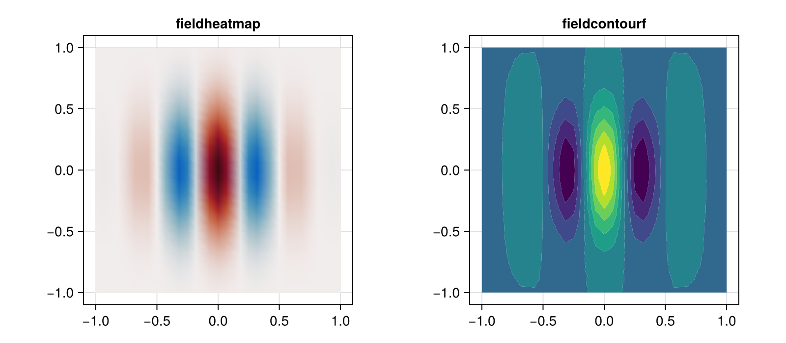
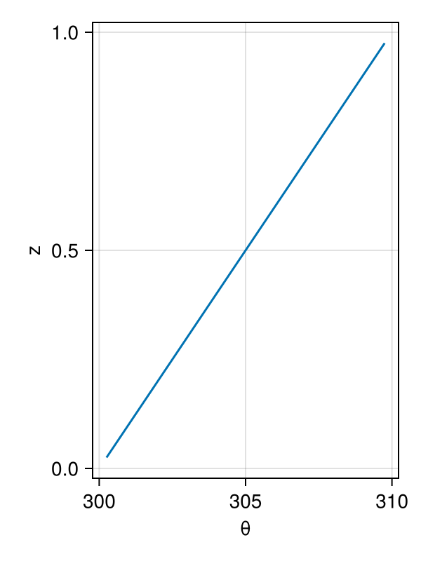

Plot fields
ClimaCore fields are plotted with Makie through the ClimaCore.Visualize recipes, or after interpolation to a regular grid with any plotting library. This page covers both routes.
Prerequisites
CairoMakie (or another Makie backend) in the environment. Loading it activates the ClimaCore.Visualize recipes (Visualize).
Plot a field on its elements
fieldheatmap draws a two-dimensional spectral-element field, or one level of an extruded field, on its own nodes; fieldcontourf draws filled contours. Both accept the Makie attributes of mesh and contourf (colormap, colorrange, …) and compose with Figure and Axis.
import ClimaComms
ClimaComms.@import_required_backends
using ClimaCore.CommonSpaces
import ClimaCore: Fields, Spaces
using CairoMakie
import ClimaCore.Visualize: fieldheatmap, fieldheatmap!, fieldcontourf!
CairoMakie.activate!(type = "png")
space = RectangleXYSpace(;
x_elem = 8, y_elem = 8, x_min = -1.0, x_max = 1.0, y_min = -1.0, y_max = 1.0,
periodic_x = true, periodic_y = true, n_quad_points = 4,
)
(; x, y) = Fields.coordinate_field(space)
f = @. exp(-4 * (x^2 + y^2)) * cos(3π * x)
fig = Figure(size = (800, 350))
ax1 = Axis(fig[1, 1], title = "fieldheatmap", aspect = 1)
fieldheatmap!(ax1, f; colormap = :balance, colorrange = (-1, 1))
ax2 = Axis(fig[1, 2], title = "fieldcontourf", aspect = 1)
fieldcontourf!(ax2, f)
fig
For an extruded field, select a level first: Fields.level(field, 1) is the lowest center level and Fields.level(field, ClimaCore.Utilities.half) the lowest face level. Plots on the cubed sphere draw the six panels in their three-dimensional positions; interpolate to latitude–longitude for a map.
Plot a column
A finite-difference field is a vector of values against a vector of coordinates; parent exposes both arrays.
column = ColumnSpace(; z_elem = 20, z_min = 0.0, z_max = 1.0, staggering = CellCenter())
z = Fields.coordinate_field(column).z
θ = @. 300 + 10 * z
fig = Figure(size = (300, 400))
ax = Axis(fig[1, 1], xlabel = "θ", ylabel = "z")
lines!(ax, vec(parent(θ)), vec(parent(z)))
fig
Interpolate to a regular grid
Remapping.interpolate returns a plain array on a latitude–longitude (or x–y) grid, at given heights for extruded fields, that any plotting function accepts; this is the route for maps of cubed-sphere fields and for output files (Remap and interpolate):
longs = range(-180, 180, length = 181)
lats = range(-90, 90, length = 91)
hcoords = [Geometry.LatLongPoint(lat, long) for long in longs, lat in lats]
remapper = Remapping.Remapper(space, hcoords, [Geometry.ZPoint(1000.0)])
heatmap(longs, lats, Remapping.interpolate(remapper, field)[:, :, 1])Three dimensions on the cubed sphere does this for a diffusing field.
Output for external tools
Remapping.interpolate arrays can be written to NetCDF with NCDatasets.jl; ClimaCoreTempestRemap writes cubed-sphere fields and their mesh in the format TempestRemap consumes for conservative regridding (Companion packages). In the CliMA models, ClimaDiagnostics.jl handles scheduled output and ClimaAnalysis.jl the plotting of it.